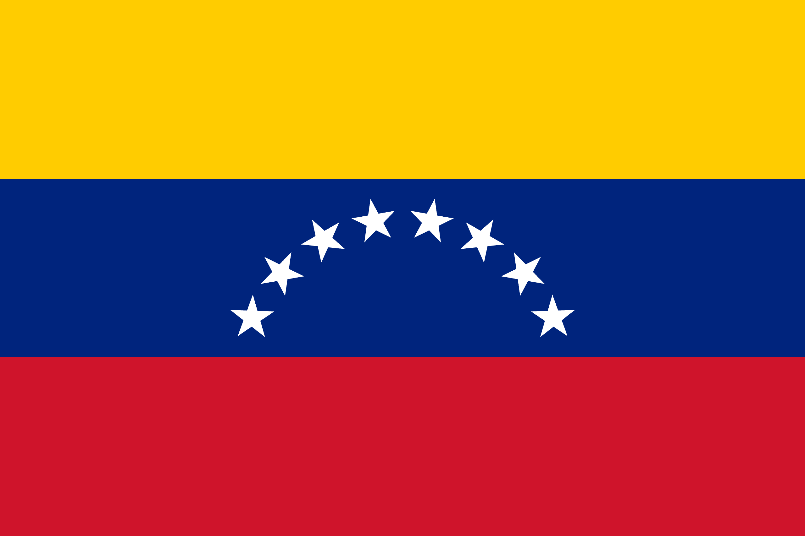
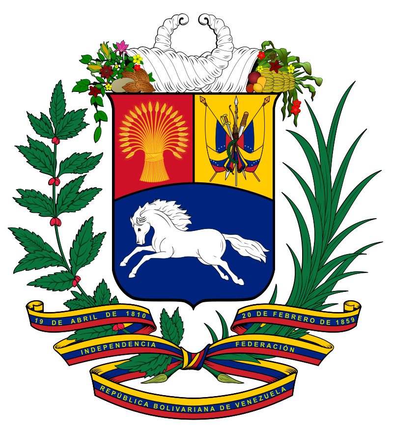
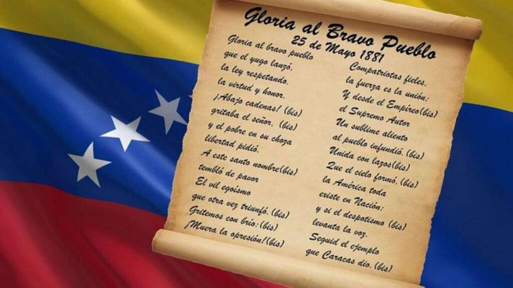

¡Bienvenidos a la Aventura Patria!
Hola amiguito, en esta página web vas a descubrir los secretos mejor guardados de nuestros Símbolos Patrios. Aprenderás su historia, qué significan sus colores y elementos, ¡Y podrás jugar a divertidos retos interactivos! ¿Estás listo para empezar?
📹 Mira este video introductorio sobre nuestra identidad nacional.
¿Qué quieres aprender hoy?

La Bandera Nacional
Descubre el significado del amarillo, azul y rojo, y la historia de sus 8 estrellas brillantes.
¡A Jugar! 🧩
El Escudo Nacional
¿Sabías qué significan las espigas y el caballo blanco? ¡Entra aquí y descúbrelo!
¡A Jugar! 🛡️
El Himno Nacional
Entona con orgullo las notas del "Gloria al Bravo Pueblo" y pon a prueba tu memoria musical.
¡A Jugar! 🎵